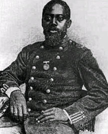

|

NAME: William Harvey Carney
BORN: 1842
DIED: 1908
ALLEGIANCE: Union
HIGHEST RANK: Sergeant
UNIT: 54th Massachusetts Infantry Regiment
RECORD: Mustered into service as sergeant, February
17, 1863. Honorably discharged in 1864.
|
|
William Harvey Carney was born a slave on March 28, 1842,
but escaped as a teenager to Massachusetts with his father
via the Underground Railroad. They were able later to buy
the rest of the family out of slavery.
Shortly after the issuance of the Emancipation
Proclamation, Carney was recruited to join the showcase 54th
Massachusetts Infantry Unit. He was mustered in at New
Bedford, Massachusetts, on February 17, 1863, joining the
unit's Company C with the rank of Sergeant. When asked why
he was enlisting, Carney answered, "Previous to the
formation of colored troops, I had a strong inclination to
prepare myself for the ministry; but when the country called
for all persons, I could best serve my God serving my
country and my oppressed brothers."
As part of the 54th, Carney took part in the famous July
18, 1863 assault on Fort Wagner in Charleston, South
Carolina. He distinguished himself in that engagement,
saving his unit's flag, then planting it on the parapet and
holding it while the troops charged. He was wounded four
times--in the head, leg, and hip--but recognizing the
Federal troops had to retreat, he trudged, under heavy fire,
back across the battlefield, returning the flag to the Union
lines. Before turning over the colors he remarked modestly,
"Boys, I only did my duty; the old flag never touched the
ground!"
Too badly injured to return to duty, Carney was mustered
out of the Union army in 1864. He took a job as a postal
carrier, and worked in that capacity for 31 years. He was
also a popular speaker at patriotic events.
On May 23, 1900, nearly 40 years after the fact, Carney
was awarded the Medal of Honor for his actions at Fort
Wagner, becoming the first African American to earn that
decoration. The citation read:
When the color sergeant was shot down, this soldier
grasped the flag, led the way to the parapet, and planted
the colors thereon. When the troops fell back he brought off
the flag, under a fierce fire in which he was twice severely
wounded.
William Carney died on March 20, 1908. All flags in
Massachusetts were flown at half-staff the next day in his
honor. The flag he saved at Fort Wagner hangs in Boston's
Memorial Hall, not far from August Saint-Gaudens's bronze
mural honoring the 54th.
Source: Christopher Bates for the History 139A website.
|